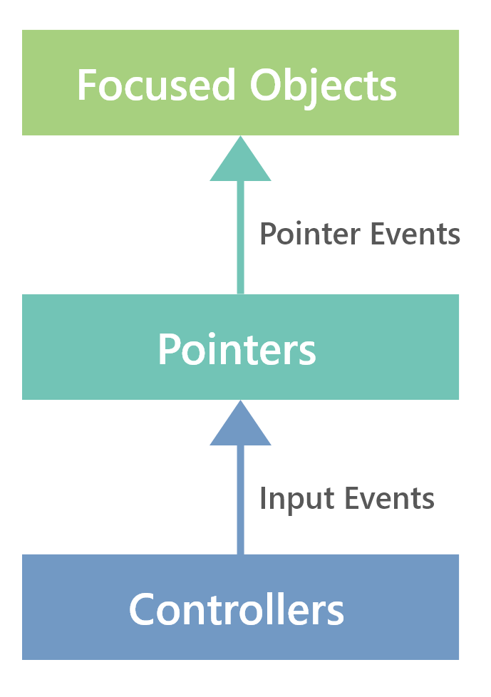

输入总览
MRTK中的输入系统使您能够：
- 通过输入事件来处理来自各种输入源的输入，例如6个DOF控制器，铰接的手或语音。
- 定义抽象操作，例如Select或Menu，并将它们关联到不同的输入。
- 设置指针附加到控制器，以通过焦点和指针事件驱动UI组件。
 Overview of MRTK Input System
Overview of MRTK Input System
输入是由输入数据提供者（设备管理器）产生.每个提供者都对应于特定的输入源：Open VR，Windows 混合现实（WMR），Unity游戏杆，Windows 语音等。通过Mixed Reality Toolkit组件中的Registered Service Providers Profile将提供者添加到您的项目中，并将产生输入事件 当相应的输入源可用时（例如，当检测到WMR控制器或连接了游戏手柄时），将自动运行。
输入动作 是对原始输入的抽象，旨在帮助将应用程序逻辑与产生输入的特定输入源隔离开。例如，定义一个Select动作并将其映射到鼠标左键，游戏手柄中的一个按钮和一个6自由度控制器中的一个触发器，可能会很有用。然后，您可以让您的应用程序逻辑侦听Select输入操作事件，而不必知道可能产生此事件的所有不同输入。输入动作在Input Actions Profile中定义，该配置文件位于Mixed Reality Toolkit组件的Input System Profile中。
控制器 由检测到输入设备的输入提供者创建，并在丢失或断开连接时将其删除。例如，WMR输入提供者将为6个DOF设备创建WMR控制器，为全连接手创建WMR全连接手控制器。控制器输入可以通过Input System Profile中的Controller Mapping Profile映射到输入动作。控制器引发的输入事件将包括关联的输入操作（如果有）。
控制器可以附加指针 来查询场景以确定焦点游戏对象并在其上引发 指针事件 。举例来说，我们的线指针(line pointer)使用控制器的姿势对场景执行光线投射，以计算光线的起点和方向。在Input System Profile文件下的Pointer Profile中设置为每个控制器创建的指针。
 Event flow(事件流).虽然你可以处理 UI组件中的直接输入事件 ，建议使用指针事件保持实现与设备无关.
MRTK还提供了几种方便的方法来使用与设备无关的方式直接查询输入状态。查看在MRTK中获取输入状态 获取更多细节.